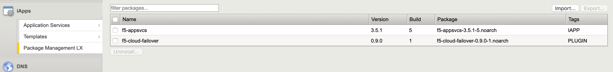

Quickstart¶
If you are familiar with the BIG-IP system, and generally familiar with REST and using APIs, this section contains the minimum amount of information to get you up and running with Cloud Failover.
Download the latest RPM package from F5 BIG-IP Cloud Failover Extension site on GitHub.
Upload and install the RPM package using the BIG-IP GUI:
- Main tab > iApps > Package Management LX > Import

- Select the downloaded file and click Upload
- For complete instructions see Install CFE using the BIG-IP Configuration utility or Install CFE using cURL from the Linux shell
When using the BIG-IP API, F5 recommends increasing the memory allocated to the process called restjavad. Note that this process will cause service interruption. Add additional memory for restjavad using the following procedure:
In the BIG-IP user interface, navigate to System > Resource Provisioning. Set Management provisioning to Large.
Modify sys db variables using following commands in the CLI (bash):
tmsh modify sys db provision.extramb value 1000tmsh modify sys db restjavad.useextramb value trueRestart restjavad daemons:
bigstart restart restjavad restnoded
Be sure to see the Known Issues on GitHub to review any known issues and other important information before you attempt to use Cloud Failover Extension.
Provide authorization (basic auth) to the BIG-IP system:
- If using a RESTful API client like Postman, in the Authorization tab, type the user name and password for a BIG-IP user account with Administrator permissions.
- If using cURL, see Install CFE using cURL from the Linux shell.
Using a RESTful API client, send a GET request to the URI
https://{{host}}/mgmt/shared/cloud-failover/infoto ensure Cloud Failover Extension is installed and running. For illustration purposes, the examples below use curl on the BIG-IP itself and the utililty jq to pretty print the JSON output:[admin@bigip-A:Active:In Sync] config # curl -su admin: -X GET http://localhost:8100/mgmt/shared/cloud-failover/info | jq . { "version": "1.2.3", "release": "0", "schemaCurrent": "1.2.3", "schemaMinimum": "1.2.3" }
Copy one of the example declarations that best matches the configuration you want to use. There are additional examples in the individual provider sections for AWS, Azure, and Google Cloud as well as the Example Declarations section.
Paste or copy the declaration into your API client, and modify any names, addresses, routes or properties as applicable.
Note
If configuration requires tags, the key and value pair in the configuration can be arbitrary but they must match the tags or labels that you assign to the infrastructure within the cloud provider. You can craft your declaration with any key and value pair as long as it matches what is in the configuration. For example:
"failoverAddresses": { "scopingTags": { "i_am_an_arbitrary_key": "i_am_an_arbitrary_value" }
POST to the URI
https://<BIG-IP>/mgmt/shared/cloud-failover/declare.Below is an example where cfe.json is the file that has been uploaded or edited locally to contain the contents of your CFE declaration.
[admin@bigip-A:Active:In Sync] config # vim cfe.json [admin@bigip-A:Active:In Sync] config # curl -su admin: -X POST -d @cfe.json http://localhost:8100/mgmt/shared/cloud-failover/declare | jq . [admin@bigip-B:Standby:In Sync] config # curl -su admin: -X POST -d @cfe.json http://localhost:8100/mgmt/shared/cloud-failover/declare | jq .
If the declaration is successful, you will receive a response that looks like this example:
{ "message": "success", "declaration": "..." }
Important
You must POST the initial configuration to each device at least once for the appropriate system hook configuration to enable failover via CFE. After that, additional configuration operations can be sent to a single device.
Validate.
{kind=link}
- See the Validation section.
- Review the logs:
tail –f /var/log/restnoded/restnoded.log.
Quick Start Example¶
Here is a simple example declaration for AWS. NOTE: This example declaration requires CFE v1.5.0 and above.
1 2 3 4 5 6 7 8 9 10 11 12 13 14 15 16 17 18 19 20 21 22 23 24 25 26 27 28 29 30 31 32 33 34 35 36 37 38 39 | {
"class":"Cloud_Failover",
"environment":"aws",
"controls":{
"class":"Controls",
"logLevel":"silly"
},
"externalStorage":{
"scopingTags":{
"f5_cloud_failover_label":"mydeployment"
}
},
"failoverAddresses":{
"enabled":true,
"scopingTags":{
"f5_cloud_failover_label":"mydeployment"
}
},
"failoverRoutes":{
"enabled":true,
"routeGroupDefinitions":[
{
"scopingName":"rtb-11111111111111111",
"scopingAddressRanges":[
{
"range":"0.0.0.0/0"
}
],
"defaultNextHopAddresses":{
"discoveryType":"static",
"items":[
"10.0.13.11",
"10.0.23.11"
]
}
}
]
}
}
|
Note
To provide feedback on Cloud Failover Extension or this documentation, you can file a GitHub Issue.